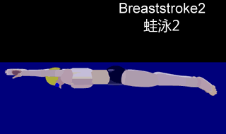

|  | |
| En el estilo braza el nadador flota boca abajo, con los brazos apuntando al frente, las palmas vueltas, y ejecuta la siguiente secuencia de movimientos horizontales: se abren los brazos atrás hasta quedar en línea con los hombros, siempre encima o debajo de la superficie del agua. Se encogen las piernas, con las rodillas adentro y los tobillos afuera, y luego se estiran con un impulso al tiempo que los brazos vuelven al frente verticalmente, momento en el cual comienza de nuevo todo el ciclo. El estilo se nada sobre el pecho y es el estilo natatorio recreativo más popular debido a su estabilidad y a la posibilidad de respirar o coger el aire una sola vez durante todo el proceso. En la mayoría de las clases de natación los principiantes aprenden primero la braza o el crol. La braza es el más lento de los cuatro estilos oficiales en la natación competitiva. Los nadadores más rápidos pueden nadar a braza a una velocidad aproximada de 1,67 metros por segundo. El nado de braza requiere más fuerza y energía que cualquier otro estilo, incluyendo la mariposa. Además, la braza requiere un mayor uso de los músculos de las piernas que el resto de los estilos. La braza empieza con el nadador tumbado sobre el agua boca abajo, con los brazos extendidos adelante y las piernas extendidas atrás. |
|
| Prueba | Récord | Récordwoman | País | Fecha | Lugar |
|---|---|---|---|---|---|
| 50 metros | 29,48 | Rūta Meilutytė | Lituania | 3 de agosto de 2013 | Barcelona, España |
| 100 metros | 1:04,35 | Rūta Meilutytė | Lituania | 29 de julio de 2013 | Barcelona, España |
| 200 metros | 2:19,11 | Rikke Pedersen | Dinamarca | 1 de agosto de 2013 | Barcelona, España |
| Prueba | Récord | Récordman | País | Fecha | Lugar |
|---|---|---|---|---|---|
| 50 metros | 26,42 | Adam Peaty | Reino Unido | 4 de agosto de 2015 | Kazán, Rusia |
| 100 metros | 57,13 | Adam Peaty | Reino Unido | 7 de agosto de 2016 | Río de Janeiro, Brasil |
| 200 metros | 2:07,01 | Akihiro Yamaguchi | Japón | 15 de septiembre de 2012 | Gifu, Japón |
| Si desea volver a la página principal haz clic aquí |